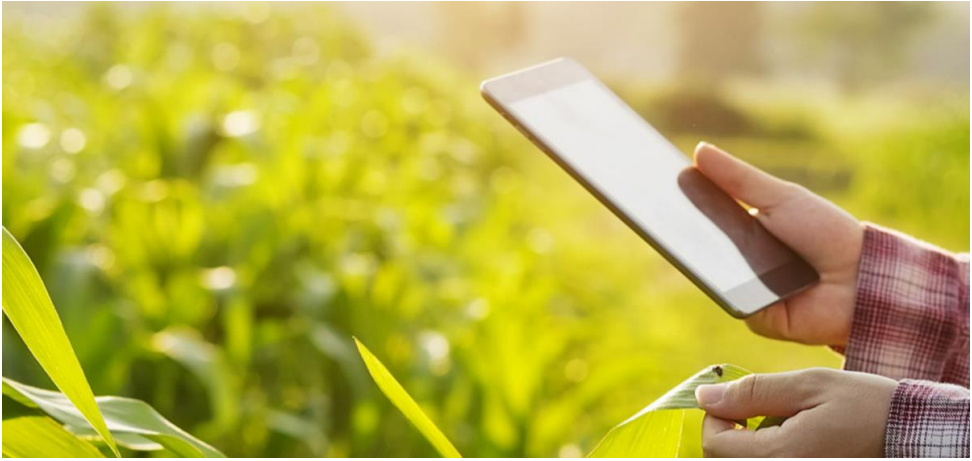

L'internet des objets :
L’IoT (« internet of things », ou internet des objets) est partout, dans les smartphones, les maisons, les voitures, les entreprises, et même les vêtements. Nous assistons à un développement sans précédent des objets connectés permettant d’analyser chacune de nos actions, et d’améliorer la moindre défaillance des systèmes productifs – en particulier dans le domaine de l’agriculture.
L’internet des objets et le secteur agricole :
L’internet des objets est un réseau de réseaux qui permet de transmettre des données entre objets physiques et virtuels. N’importe quel objet peut faire partie de l’IoT dès lors qu’il est relié à un réseau Internet par une puce électronique, un capteur ou une connectivité réseau lui permettant de communiquer avec d’autres objets connectés, de collecter et d’échanger des données. Dans un même réseau, les objets sont connectés entre eux et peuvent interagir, permettant ainsi d’optimiser leurs usages, tout en recevant de multiples données et analyses sur leur activité.
L’IoT est ainsi en passe de s’imposer comme une nouvelle révolution industrielle dans tous les secteurs d’activité, et notamment dans le secteur agricole.
Le marché des connexions M2M (« Machine to Machine », donc sans intervention humaine) en agriculture devrait être multiplié par 17 entre 2014 et 2024, pour atteindre 225 millions de dollars. D’ici 2022, les experts estiment qu’environ 14 milliards d’appareils, incluant des machines de production, seront gérés en réseau et contribueront à améliorer la production de façon drastique.
En 2024, la région Asie-Pacifique sera le plus gros marché pour les applications agricoles M2M avec 54 millions d’objets connectés. L’Europe sera alors en deuxième position avec 51 millions d’objets.
L’IoT au service des élevages :
Plus récemment, l’Internet des Objets a investi un nombre croissant d’élevages. « La vache est l’animal le plus connecté au monde », constate Nicolas Devos. Dotées de colliers enrichis de capteurs, les vaches délivrent des informations sur leur état et leurs comportements. « Un éleveur peut repérer une vache isolée, recueillir sa température corporelle et ainsi en déduire si elle est malade, si elle est en danger ou si elle est en gestation. Toutes ces données lui permettent de prendre rapidement des décisions, comme celle de pratiquer une insémination en cas de hausse de la température, ou l’isolement pour éviter ou réduire la contamination du troupeau, » ajoute-til.
Aujourd’hui d’autres techniques arrivent sur le marché comme l’insertion de capteurs sous la peau de l’animal ou dans le corps par ingestion. Ces dispositifs fournissent des données d’une extrême précision sur l’état physique des animaux et permettent d’identifier des maladies avant qu’elles ne se déclarent. « De telles technologies prémunissent ainsi les éleveurs contre les catastrophes économiques telles qu’ils en rencontrent régulièrement ces dernières années, comme la destruction massive d’élevages de canards et d’oies à l’automne dernier en prévention d’une épizootie de grippe aviaire », rappelle Nicolas Devos.
En se digitalisant, et grâce notamment à l’IoT, les agriculteurs et éleveurs ont une meilleure maitrise de leurs exploitations et de leurs troupeaux. Ils gagnent en prévention et en productivité, tout en répondant aux exigences de traçabilité du consommateur et du législateur.